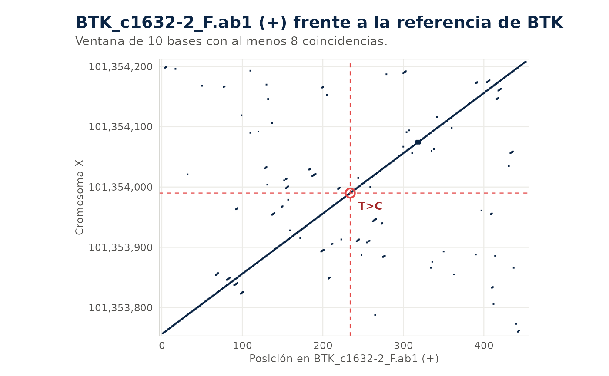
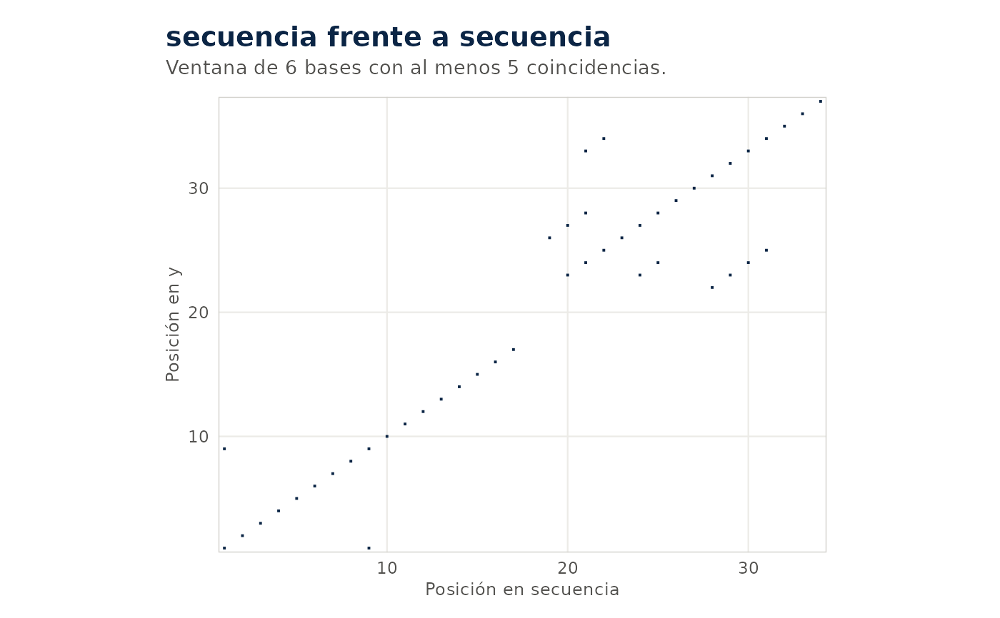

Compara dos secuencias con el metodo clasico de ventanas. Se marca un punto
en (i, j) cuando la ventana de ventana bases que empieza en la posicion i
de x y la que empieza en la posicion j de y coinciden en al menos
umbral bases. Dos secuencias iguales forman una diagonal. Una sustitucion
apenas la interrumpe, una insercion o delecion la corta y la continua
desplazada, y una repeticion aparece como diagonales paralelas.
Usage
iei_dotplot(
x,
y = NULL,
gen = NULL,
region = NULL,
referencia = NULL,
ventana = 10,
umbral = 8,
variante = 1,
lectura = 1,
build = c("GRCh38", "GRCh37"),
cache = tools::R_user_dir("ieiprio", "cache")
)Arguments
- x
Secuencia escrita, ruta a un FASTA,
.ab1o.scf, o un resultado deiei_sanger().- y
Opcional, otra secuencia en cualquiera de esas formas.
- gen, region, referencia, build, cache
Para comparar con la referencia genomica, como en
iei_sanger().- ventana
Largo de la ventana en bases.
- umbral
Coincidencias minimas dentro de la ventana para marcar un punto.
- variante
Fila de
xcuya posicion se marca, sixviene deiei_sanger().NULLno marca nada.- lectura
Lectura de
xa usar si trae varias (nombre o numero).
Details
Si y no se da, x se compara con su referencia: la del alineamiento si
x viene de iei_sanger(), o la de gen, region o referencia. Sin
nada de eso, x se compara consigo misma, lo que muestra sus repeticiones.
La lectura se orienta sola si esta en la hebra reversa.
Examples
ab1 <- iei_ejemplo_sanger()
#> Cromatogramas de ejemplo en /tmp/Rtmpont26R/sanger_1a3973e19633.
ref <- system.file("extdata", "btk_referencia.fa", package = "ieiprio")
v <- iei_sanger(ab1, gen = "BTK", sexo = "M", referencia = ref)
#> BTK_c1632-2_F.ab1: hebra +, 461 bases alineadas en X:101353757-101354217,
#> identidad 99.8%.
#> BTK_c1632-2_R.ab1: hebra -, 461 bases alineadas en X:101353758-101354218,
#> identidad 99.8%.
iei_dotplot(v)

iei_dotplot("ACGTTGCAACGTAGGCTTACGATCGATCGGATCCATGCA",
"ACGTTGCAACGTAGGCTTACGGGGATCGATCGGATCCATGCA", ventana = 6, umbral = 5)
